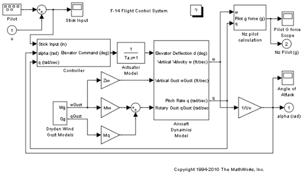

Migration to Structure Parameters
This demo illustrates the process of converting a Simulink® model that is parameterized by unstructured workspace variables to a model that is parameterized by a MATLAB® structure. The demo shows how to use Simulink utilities to organize model variables from the base workspace into a hierarchical structure and then apply the structure to the model.
Contents
Model Description
Open the demo model sldemo_applyVarStruct.
This model uses a number of numeric parameters from the base workspace.
Demo Requirements
This demo changes the original model and creates files in the current working directory. If you plan to save the demo models, save a copy in the current directory.
Typical Workflow
Migrating a model to use structure parameters follows these steps:
1. Collect all numeric variables used by the model into a MATLAB structure.
2. Modify the MATLAB structure (if necessary).
3. Apply the MATLAB structure to the model.
4. Configure the appearance of the parameter structure in the generated code (optional).
Collecting Numeric Variables into a MATLAB Structure
You can use Simulink.findVars to find out what variables are used by the Simulink model.
model = 'sldemo_applyVarStruct'; varList = Simulink.findVars(model, 'WorkspaceType', 'base')
varList =
20x1 Simulink.WorkspaceVar handle
Package: Simulink
Properties:
Name
Workspace
WorkspaceType
UsedByBlocks
var = varList(1)
var =
Simulink.WorkspaceVar handle
Package: Simulink
Properties:
Name: 'Ka'
Workspace: 'base workspace'
WorkspaceType: 'base'
UsedByBlocks: {'sldemo_applyVarStruct/Controller/Gain3'}
You can use Simulink.BlockDiagram.createVarStruct to generate a MATLAB structure containing all numeric variables used by the model.
ModelParam = Simulink.BlockDiagram.createVarStruct(model)
ModelParam =
Ka: 0.6770
Kf: -1.7460
Ki: -3.8640
Kq: 0.8156
Md: -6.8847
Mq: -0.6571
Mw: -0.0059
Swg: 3
Ta: 0.0500
Tal: [0.3959 1]
Ts: [0.1000 1]
Uo: 689.4000
Vto: 690.4000
W1: [1 2.9710]
W2: [1 4.1440]
Zd: -63.9979
Zw: -0.6385
a: 2.5348
b: 64.1300
g: 32.2000
Variable ModelParam is a MATLAB structure that contains the numeric variables as fields (sorted by name).
NOTE:
- The model and all data that the model uses must be loaded before calling Simulink.BlockDiagram.createVarStruct.
- Do not give MATLAB structure the same name as one of numeric variables.
Modifying the MATLAB Structure
The original structure contains all the variables in one level of hierarchy. You can change the structure before applying it to the model. For example, reorder parameter fields, add extra levels to group model parameters, or add extra fields.
NOTE:
- Do not change the names of the leaf fields in the structure.
- Do not clear the original variables until you have finished the migration process.
1. One way to do this is to use Simulink.saveVars to write the structure to a MATLAB script and make changes in the file.
Simulink.saveVars('sldemo_applyVarStruct_data.m','ModelParam')
edit sldemo_applyVarStruct_data.m2. Edit the MATLAB script as needed. For example, split the structure into two structures.
- 'ControlParam' contains all parameters for the Controller subsystem.
- 'ModelParam' contains all other numeric parameters.
ControlParam = struct; ControlParam.Ka = 0.677; ControlParam.Kf = -1.746; ControlParam.Ki = -3.864; ControlParam.Kq = 0.8156; ControlParam.Tal = [0.3959 1]; ControlParam.Ts = [0.1 1]; ControlParam.W1 = [1 2.971]; ControlParam.W2 = [1 4.144];
ModelParam = struct; ModelParam.Md = -6.8847; ModelParam.Mq = -0.6571; ModelParam.Mw = -0.00592; ModelParam.Swg = 3; ModelParam.Ta = 0.05; ModelParam.Uo = 689.4; ModelParam.Vto = 690.4; ModelParam.Zd = -63.9979; ModelParam.Zw = -0.6385; ModelParam.a = 2.5348; ModelParam.b = 64.13; ModelParam.g = 32.2;
Save the modified data file. You can use it as a preload function.
3. Run the modified MATLAB script to create the MATLAB structures.
sldemo_applyVarStruct_data;
Applying the MATLAB Structure to the Model
You can use Simulink.BlockDiagram.applyVarStruct to automatically replace the variable references in the block diagram by the equivalent structure references.
1. Apply the MATLAB structure to the model. The demo model will be changed. You can then save it to a writable directory.
[applied,unapplied]=Simulink.BlockDiagram.applyVarStruct(model,'ControlParam')
[applied,unapplied]=Simulink.BlockDiagram.applyVarStruct(model,'ModelParam')
NOTE:
- You can use 'preview' ApplyMode to get information about what will be changed without actually changing the model:
Simulink.BlockDiagram.applyVarStruct(model,'ModelParam', 'ApplyMode', 'preview')
- If the model has been compiled, you can use 'cached' SearchMethod to avoid model recompiling:
Simulink.BlockDiagram.applyVarStruct(model,'ModelParam', 'SearchMethod', 'cached')
- If unapplied output is not empty, you can investigate the reason using Simulink.findVars(model,'WorkspaceType','base','Name',variableName). The probable causes are: you changed structure field names or added extra fields; the variable is used by a block that needs special consideration, e.g., Stateflow® chart, S-Function or Model block.
2. Test the MATLAB structure in the modified model.
Clear unnecessary variables and run the simulation to check results.
clear; model = 'sldemo_applyVarStruct'; sldemo_applyVarStruct_data;
sim('sldemo_applyVarStruct');- Check for any warnings or errors.
- Check simulation results.
Configuring the Structure Parameter to Appear in Generated Code
By default, the MATLAB structure does not appear in generated code because numeric values are inlined. Code generation requires Real-Time Workshop®.
1. To make the structure variable tunable, create Simulink.Parameter with the structure value and 'ExportedGlobal' storage class.
p=Simulink.Parameter; p.Value=ControlParam; p.RTWInfo.StorageClass='ExportedGlobal'; ControlParam=p; clear p;
rtwbuild('sldemo_applyVarStruct');The generated code now contains a structure type definition for the tunable structure in the model_types.h header file. By default, Real-Time Workshop generates an automatic name for the type of parameter structures. This name is unique, but not easy to recognize.
typedef struct {
real_T Ka;
real_T Kf;
real_T Ki;
real_T Kq;
real_T Tal[2];
real_T Ts[2];
real_T W1[2];
real_T W2[2];
} struct_mn4cJ7zsH8aqc8bBlbIkqC;2. You can control this type name by using Simulink.Bus to specify the data type of the Simulink.Parameter object.
You can use Simulink.Bus.createObject to create a bus object with the same shape as the MATLAB structure.
busInfo=Simulink.Bus.createObject(ControlParam.Value)
Assign the bus object name to the Simulink.Parameter DataType attribute.
ParamType=eval(busInfo.busName); ControlParam.DataType='Bus: ParamType'; clear(busInfo.busName); clear busInfo;
NOTE: Only Simulink.Parameter can accept the bus object name as a data type. For MATLAB structures, Real-Time Workshop generates an automatic name for the type.
3. Resave the data file to include the modified workspace variables.
Simulink.saveVars('sldemo_applyVarStruct_data.m', '-append')4. Regenerate code for the modified model (requires Real-Time Workshop).
rtwbuild(model);
The generated type definition now appears as:
typedef struct {
real_T Ka;
real_T Kf;
real_T Ki;
real_T Kq;
real_T Tal[2];
real_T Ts[2];
real_T W1[2];
real_T W2[2];
} ParamType;The parameter definition is:
ParamType ControlParam = {
0.677,
-1.746,
-3.864,
0.8156,
{0.3959, 1.0},
{0.1, 1.0},
{1.0, 2.971},
{1.0, 4.144}
}